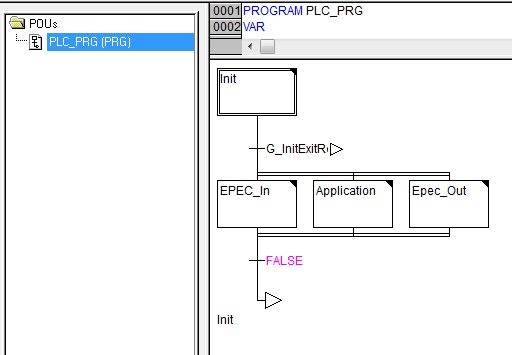
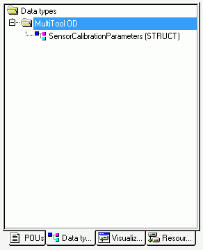

MultiTool Creator automatically creates a code template for CODESYS project when Create CODESYS Project is selected. The code template contains all variable definitions and initialization needed for programming the device.
This topic briefly introduces the code template parts:
The PLC_PRG is the main POU of a CODESYS project. MultiTool Creator automatically generates PLC_PRG for the CODESYS project and it will always be overwritten when changes done in MultiTool Creator are imported to the CODESYS project. For this reason, the user application code should never be added to PLC_PRG.
For the user application code, create a new POU called Main. This will be the entry point of the user application. The code template automatically calls the Main program in the PLC_PRG's action Application. It is not overwritten by MultiTool Creator. If the Main POU is missing from the application, the CODESYS build command gives an error.
CODESYS 2.3 code template is divided to the POUs, Data types and Resources tabs.

The PLC_PRG is divided into four actions: Init, Epec_In, Application and Epec_Out.
The Init action is run on each program cycle until all initializations are done. The initialization phase is divided into several steps to minimize the needed time of each program cycle. After the initialization phase, Epec_In, Application and Epec_Out actions are run on each program cycle.
|
PLC_PRGs action |
Sub-action |
Description |
|
Init |
Init_Entry |
Reads system parameters Contains call of the user POU |
|
Init_Flash |
Initializes non volatile memory |
|
|
Init_IO |
I/O initialization functions |
|
|
Init_Bus |
Initializes CANVXD library instance for each CAN |
|
|
Init_Protocols_CANx (*) |
CAN protocol initializations for each CAN bus, including CANopen and SAE J1939 |
|
|
Init_Events |
Initializations for Events |
|
|
Init_Exit |
Initializes the identity object (1018h) |
|
|
Epec_In |
IO_Filter |
Filters I/O pin raw values |
|
Diag |
CAN bus diagnostics HWD_Diagnostic instance call G_SystemOk variable handling LED handling |
|
|
Bus |
Updates CAN buffers |
|
|
Other |
Reserved for future use |
|
|
Application |
Only contains call for the user application Main |
|
|
Epec_Out |
Other |
All functions that are needed to run at the end of the program cycle, such as - analogue input protection - parameter saving - resetting the control device if needed (NMT reset) |
* CAN bus consecutive numbering, typically 1=CAN1, 2=CAN2 etc.
MultiTool Creator generates global variable and function block instance definitions to (Implicit) Globals lists. These variables and instances can be used, for example, for diagnosing CAN bus and hardware. Code template calls these function blocks automatically. Code template global definitions can be found from the Resources tab in CODESYS 2.3
Variable definitions are divided into several global lists, defined in the table below.
|
Global variable list |
Description |
|
Code_Template_Globals |
All variable definitions and function block instances needed in code template, such as init phase booleans - CANopen instance and array definitions Variables that might be needed in application, such as G_SystemOk boolean, HWD_Measurements instance and limit definitions. |
|
ERRORS |
Error variables |
|
EVENTS |
Event source addresses and data initialization. |
|
IO |
I/O pin variables that are needed when developing an application |
|
IO_RAW |
Non scaled raw values of I/O pins. Not needed in normal use, since the code template filters and scales the values before writing them to I/O variables. |
|
IO_CONFIG |
I/O pin configurations, such as - input pull up configurations - pulse input range selections - input mode selections (mA/V) - output mode selections |
|
IO_INTERNAL |
Internal I/O - Scaled and filtered voltage and temperature measurements - Reference output enable variables - Overcurrent error statuses for AI pins |
|
J1939 (optional) |
J1939 library instance Global variable definitions - J1939_CANx(*) variable for each CAN bus that uses J1939 - Variable type is a structure defined in the application |
|
ODx_VAR (*) |
OD variables whose variable type is RAM, retain or retain persistent. |
|
ODx_PAR (*) |
OD variables whose variable type is Parameter |
|
ODx_CANI (*) |
Variables of received PDOs (RPDO) |
|
ODx_CANO (*) |
Variables of transmitted PDOs (TPDO) |
|
SYSTEM |
Project information, such as device type, serial number, firmware version, 5050 FW error log. |
|
HMI |
HMI related variables, such as 2040 soft button states |
|
slave Configurations (folder) |
This folder includes a global variable list for each slave device |
* OD's consecutive numbering, typically 1=CAN1, 2=CAN2 etc.
MultiTool Creator creates structures and/or enumerations for
J1939 receive and transmit PGNs
Pre-defined indexes
User defined record indexes
Events
In CODESYS 2.3, structures and enumerations can be found from the Data types tab.

Epec Oy reserves all rights for improvements without prior notice.
Source file topic200034.htm
Last updated 25-Jun-2025